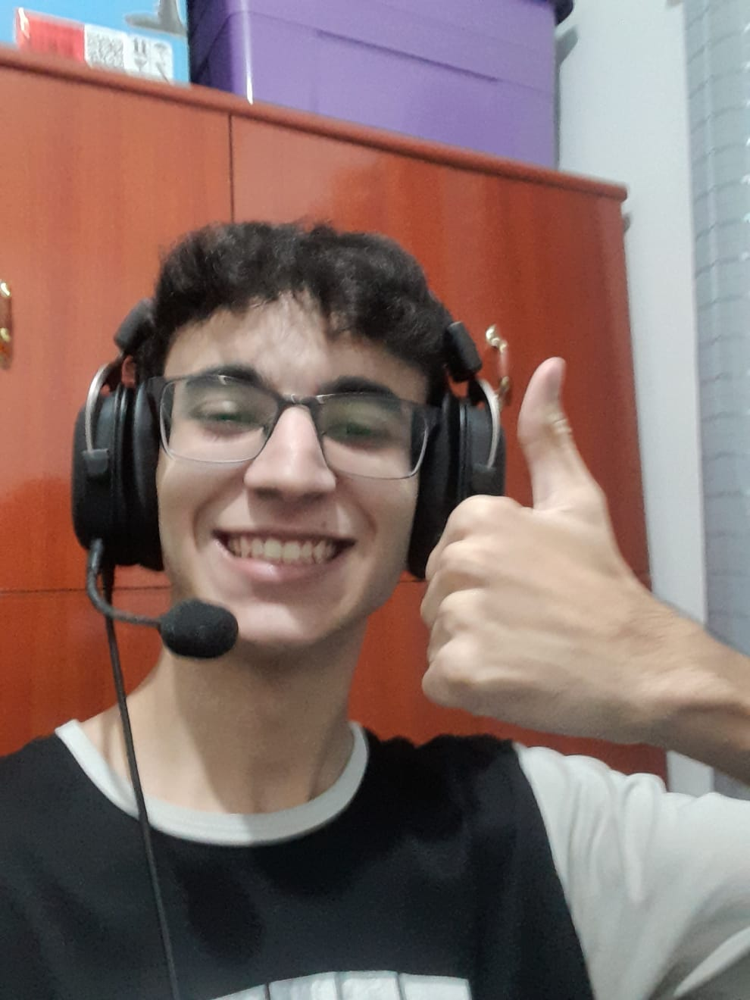

História Maluca
Na byron.solutions, geri um trabalho em grupo que se consistia em, com o auxilio das ferramentas dispostas em um relatório do GitHub, montar uma história por meio de issues e pull requests.
Bem vindos a minha linha do tempo.
Trainee de Projetos na byron.solutions.

Prazer, me chamo Enzo, sou da cidade de São José dos Campos, e com 18 anos estou atualmente cursando Engenharia de Computação na Universidade Federal de Itajubá (UNIFEI).
Desde pequeno, quando ganhei um notebook pra passar o tempo, eu me enturmei na área de computação e afins, seja pelos próprios computadores ou por jogos, aplicativos, videos, séries e quaisquer outras midias. Naturalmente, o interesse em saber mais sobre como tudo funcionava emergiu, e assim, o caminho foi traçado pra que hoje eu faça o que eu faço, isto é, explorar o mundo virtual e buscar ampliar meu conhecimento sobre um espaço que eu vivo já a tanto tempo. Quanto a objetivos, além de ser um bom profissional, almejo criar projetos que, possivelmente de alguma forma, inspirem os próximos estudantes de computação, sejam eles jovens ou já mais experientes, para que assim, da mesma forma que eu fui inspirado por outras tantas inovações que movimentam o nosso cotidiano, outros possam se integrar no que hoje é a área em maior crescimento da humanidade, e possam ser os futuros inovadores que as próximas gerações necessitarão.
Quanto a gostos, sou fã de jogar, escrever histórias, ouvir música e conversar com amigos, vivo tranquilo quanto ao meu meio social e valorizo muito a minha família e a minha saúde. Busco sempre melhorar e tento o meu máximo para realizar meus objetivos.
Prazer, me chamo Enzo, sou da cidade de São José dos Campos, e com 18 anos estou atualmente cursando Engenharia de Computação na Universidade Federal de Itajubá (UNIFEI).
Desde pequeno, quando ganhei um notebook pra passar o tempo, eu me enturmei na área de computação e afins, seja pelos próprios computadores ou por jogos, aplicativos, videos, séries e quaisquer outras midias. Naturalmente, o interesse em saber mais sobre como tudo funcionava emergiu, e assim, o caminho foi traçado pra que hoje eu faça o que eu faço, isto é, explorar o mundo virtual e buscar ampliar meu conhecimento sobre um espaço que eu vivo já a tanto tempo. Quanto a objetivos, além de ser um bom profissional, almejo criar projetos que, possivelmente de alguma forma, inspirem os próximos estudantes de computação, sejam eles jovens ou já mais experientes, para que assim, da mesma forma que eu fui inspirado por outras tantas inovações que movimentam o nosso cotidiano, outros possam se integrar no que hoje é a área em maior crescimento da humanidade, e possam ser os futuros inovadores que as próximas gerações necessitarão.
Quanto a gostos, sou fã de jogar, escrever histórias, ouvir música e conversar com amigos, vivo tranquilo quanto ao meu meio social e valorizo muito a minha família e a minha saúde. Busco sempre melhorar e tento o meu máximo para realizar meus objetivos.
Na byron.solutions, geri um trabalho em grupo que se consistia em, com o auxilio das ferramentas dispostas em um relatório do GitHub, montar uma história por meio de issues e pull requests.

Usando o aplicativo Notion, esquematizei um plano de estudos com demonstrações visuais, utilização de bancos de dados e organização de pendências, como tarefas universitárias, trabalhos de empresa e outros.

Em um projeto promovido pelo Colégio Embraer chamado de "Projeto Abrangente", eu e meu grupo idealizamos a criação do "UV-Quality", uma câmara semelhante a um micro-ondas que utiliza da radiação de ondas UV-C para esterelizar objetos contidos dentro dessa câmara.